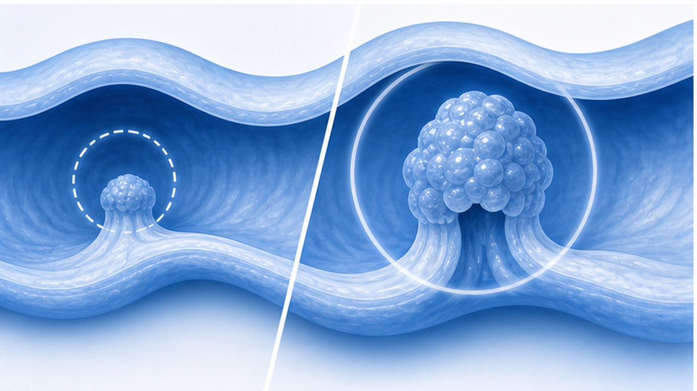

PAPER REVIEW · GASTROENTEROLOGY · CANCER SCREENING
ACS 2026 대장암 검진 업데이트,
혈액검사는 어디에 놓을 것인가
CA: A Cancer Journal for Clinicians 2026.05.27 — 혈액 기반 cfDNA 검사가 처음 포함. 단, 기존 선호 검사를 거부하거나 완료하지 않는 환자에게 쓰는 보조 선택지.
CHAPTER 01 · TL;DR
한 문장으로: 혈액검사는 '거부군 구조용' 옵션
검진 시작·종료 원칙은 그대로, 선택지는 넓어졌지만 우선순위는 바뀌지 않았다.
START
45세
평균위험 성인은 45세부터 정기 검진 시작. 2018 권고 유지.
CONTINUE
75세
기대여명 10년 이상이면 75세까지 지속. 76-85세는 개별화.
BLOOD TEST
2차 선택
선호 검사 거부·미완료 환자에게만 권고. first-line 아님.
진료실 메시지 — 대장내시경이나 FIT를 계속 거부하는 환자에게 '검진 공백'을 줄이는 근거가 생겼다. 그러나 혈액검사는 진행성 선종·초기암 검출력이 낮아 예방 효과가 제한된다.
CHAPTER 02 · WHAT CHANGED
2026 업데이트의 실제 변경점
새 검사를 추가했지만, 검사 선택의 기본 구조는 유지된다.
01
혈액 기반 cfDNA
Shield 등 종양 DNA 기반 혈액검사가 가이드라인에 처음 포함. 진료실 채혈로 시행 가능.
NEW
02
mt-sRNA stool
ColoSense 계열 다표적 분변 RNA 검사 신규 포함. 3년 간격.
3년
03
ng-mt-sDNA
차세대 Cologuard 계열 다표적 분변 DNA 검사 업데이트. 3년 간격.
3년
04
기존 FIT 유지
고감도 FIT는 매년 시행하는 핵심 비침습 검사로 계속 권고.
매년
05
내시경 유지
대장내시경은 10년 간격, CT colonography와 sigmoidoscopy는 5년 간격.
10년
06
양성 후 내시경
분변·혈액 검사 양성은 검진 완료가 아니다. 적시 대장내시경이 필수.
≤6개월
CHAPTER 03 · UNCHANGED
바뀌지 않은 핵심 권고
새 검사가 들어왔지만, 검진의 목표는 '암 발견'이 아니라 '암 예방'까지 포함한다.
대상과 연령
- 평균위험군 — 증상 없음, CRC/선종 과거력 없음, IBD·유전증후군 없음
- 45세 시작 — 젊은 대장암 증가 추세를 반영한 기존 권고 유지
- 75세까지 — 건강하고 기대여명 10년 이상이면 계속
- 76-85세 — 선호, 전신상태, 이전 검진력으로 개별 결정
- 85세 초과 — 정기 검진 중단
검사 우선순위
- Visual exam — 대장내시경, CT colonography, sigmoidoscopy
- Stool test — FIT/gFOBT 매년, mt-sDNA/mt-sRNA 3년
- Blood test — 선호 검사 거부·미완료 시 차선책
- Positive test — 반드시 진단 대장내시경으로 완결
- High-risk — 평균위험 가이드와 별도 경로
첫 상담 문장 — '가장 좋은 검사는 환자가 실제로 끝까지 완료하는 검사입니다. 다만 예방력은 검사마다 다릅니다.'
CHAPTER 04 · WHY IT MATTERS
왜 ACS가 선택지를 넓혔나
대장암은 예방 가능한 암이지만, 검진 미완료자가 여전히 많다.
UNSCREENED
2,000만+
미국에서 권고대로 검진받지 않은 적격 성인 규모.
SURVIVAL
>90%
조기 발견 시 미국 5년 생존율. 늦으면 급격히 악화.
BARRIER
준비·대변·진정
내시경 준비, 분변검체 거부, 시간·교통 장벽이 검진 공백을 만든다.
혈액검사의 역할 — 검사 성능이 최고라서가 아니라, '아무 검사도 안 하는 환자'를 검진 경로 안으로 끌어들이기 위한 선택지다.
CHAPTER 06 · BLOOD TEST BIOLOGY
Shield 혈액검사는 무엇을 보나
혈액 속 cell-free DNA에서 종양 관련 변화를 찾는 방식이다.
01
cfDNA
종양 또는 전암성 병변에서 유래할 수 있는 cell-free DNA를 혈장 내에서 분석.
02
Mutation
암세포에서 생긴 somatic mutation 신호를 탐지.
03
Methylation
염기서열을 바꾸지 않는 epigenomic alteration도 함께 평가.
04
Fragmentation
DNA 절편 패턴을 조합해 양성/음성 결과를 생성.
05
No bowel prep
장정결, 식이 제한, 진정이 필요 없다는 접근성 장점.
06
No polyp removal
양성이라도 병변 위치를 모르며, 폴립 제거는 불가능.
CHAPTER 07 · PERFORMANCE
성능: 암은 잡지만, 전암 병변은 많이 놓친다
ECLIPSE 연구의 핵심 수치를 환자 설명용으로 단순화한다.
대장암 민감도
83%
진행성 전암 병변
13%
특이도
90%
위양성
~10%
01
강점
대장암 검출 민감도는 기존 일부 비침습 검사와 비교 가능한 수준.
02
약점
진행성 선종·전암 병변 민감도가 낮아 '예방 검사'로는 한계가 크다.

CHAPTER 08 · WHY NOT FIRST-LINE
왜 first-line으로 권하지 않는가
대장암 검진의 이상적 목표는 암이 되기 전에 선종을 제거하는 것이다.
대장내시경 / FIT의 장점
- 내시경 — 병변 확인과 제거를 같은 날 수행
- FIT — 반복 시행 시 사망률 감소 근거가 강함
- 분변 분자검사 — 전암 병변 검출력이 혈액검사보다 우수
- 양성 위치 확인 — 내시경으로 바로 진단·치료 연결
혈액검사의 제한
- 전암 병변 민감도 13% — 예방 목적에는 취약
- 초기암 낮은 검출 우려 — stage I 검출이 상대적으로 약함
- 양성 후 내시경 필요 — 결국 장정결·내시경 장벽을 다시 만남
- 반복 간격·장기 효과 — 사망률 감소 효과는 추적 근거 필요
환자 설명 — '피검사가 편한 것은 맞지만, 대장내시경처럼 용종을 떼어 암을 예방하는 검사는 아닙니다.'
CHAPTER 09 · WHO
혈액검사를 고려할 수 있는 환자
평균위험군 중에서도 기존 선호 검사를 실제로 완료하지 못하는 사람이다.
01
내시경 장정결 거부
반복 상담에도 장정결·진정·동행 문제로 내시경을 계속 미루는 평균위험군.
02
분변검체 거부
FIT/분변분자검사를 설명해도 채취 자체를 거부하거나 매번 미제출.
03
검진 공백 장기화
45세 이상인데 검진 이력이 없거나 10년 이상 공백.
04
높은 접근성 필요
진료실 채혈이 현실적으로 유일하게 완료 가능한 선택지.
05
평균위험군
증상·빈혈·혈변·체중감소·IBD·가족력 고위험이 없는 경우.
06
고위험군 제외
증상 있거나 고위험이면 선별검사가 아니라 진단 대장내시경 경로.
CHAPTER 10 · OFFICE FLOW
1차 진료 상담 흐름
검사 선택은 환자 선호를 반영하되, 예방 효과 차이를 숨기지 않는다.
SCREEN
위험도 확인
증상, 가족력, IBD, 과거 선종/암, 빈혈을 먼저 배제.
OFFER
선호 검사 제안
내시경 또는 분변검사를 먼저 설명하고 선택하게 함.
BARRIER
미완료 이유 확인
장정결, 대변 채취, 비용, 시간, 두려움을 구체화.
RESCUE
혈액검사 논의
기존 검사를 거부하거나 미완료할 때 차선책으로 제안.
CLOSE
양성 후 내시경 동의
양성 시 6개월 이내 대장내시경 필요를 사전 동의.
CHAPTER 11 · POSITIVE RESULT
양성 결과는 검진 완료가 아니다
양성 후 대장내시경 누락은 선별검사의 가장 큰 실패 지점이다.
01
결과 설명
양성은 암 확진이 아니라 암/전암 병변 가능성. 불안을 낮추되 지연 금지.
02
내시경 예약
가능하면 6개월 이내. 일정·장정결·항혈전제 조정까지 한 번에 계획.
03
검사 완결
내시경에서 병변 확인, 조직검사 또는 용종절제 시행.
04
추적 간격
내시경 소견과 병리 결과에 따라 다음 검진 간격 재설정.
기록 문구 — '혈액/분변 선별검사 양성 시 진단 대장내시경 필요성 및 미시행 위험 설명함.'
CHAPTER 12 · NEGATIVE RESULT
음성 결과도 '끝'이 아니다
혈액검사는 특히 전암 병변을 놓칠 수 있으므로 반복 검진 계획을 남겨야 한다.
01
음성은 보장 아님
FDA도 음성 결과가 대장암 부재를 보장하지 않는다고 명시한다.
02
증상 발생 시 진단 경로
혈변, 철결핍빈혈, 체중감소, 배변습관 변화는 음성과 무관하게 평가.
03
반복 검진 계획
혈액검사 후 다음 검진 간격은 지침·보험·검사 라벨에 맞춰 추적.
04
선호 검사 재상담
다음 방문에서 FIT 또는 내시경 전환을 계속 논의.
상담 문장 — '이번 피검사가 음성이어도 용종을 다 보는 검사가 아니므로, 정기 검진 계획을 계속 가져가야 합니다.'
CHAPTER 13 · COMPARISON
검사별 설명 포인트
환자에게 한 표로 설명하면 선택과 사전 동의가 쉬워진다.
검사
간격
장점
주의점
대장내시경
10년
진단+용종제거, 예방 효과 최강
장정결·진정·천공/출혈 위험
FIT/gFOBT
매년
저렴, 집에서 시행, 반복 근거 강함
매년 제출해야 함, 양성이면 내시경
mt-sDNA/RNA
3년
분자표지자 포함, 비침습
비용·위양성·양성 후 내시경
CT colonography
5년
진정 없음, 구조 확인
장정결 필요, 용종 제거 불가
혈액 cfDNA
라벨/보험 확인
채혈로 접근성 높음
전암 병변 검출 낮음, first-line 아님
CHAPTER 14 · KOREA CLINIC
한국 1차 진료 적용
국내 검진 체계와 보험 현실은 다르지만, 상담 원칙은 바로 쓸 수 있다.
바로 적용할 점
- 45세 이상 미검진자에게 검진 여부를 매년 확인
- 대장내시경·FIT를 먼저 제안하고 완료를 추적
- 거부 이유를 EMR에 남기고 장벽별 대안 제시
- 혈액검사는 국내 허가·보험·검사 가능 여부 확인 후 차선책으로 설명
환자 설명 스크립트
- 최선 — '용종 제거까지 가능한 대장내시경이 가장 예방력이 큽니다.'
- 대안 — '내시경이 어렵다면 매년 FIT도 좋은 선택입니다.'
- 구조 — '둘 다 어렵다면 피검사라도 검진 공백을 줄일 수 있습니다.'
- 한계 — '다만 피검사는 작은 용종을 많이 놓칩니다.'
주의 — 혈액 기반 검사가 국내에서 동일하게 사용 가능한지, 비용·보험·검사명은 실제 도입 상황을 별도 확인해야 한다.
CHAPTER 15 · PITFALLS
피해야 할 상담 실수
편의성을 강조하다가 예방력과 후속 내시경 필요성을 흐리면 안 된다.
01
피검사 = 내시경 대체
잘못. 대장내시경처럼 용종 제거를 통한 예방 기능이 없다.
02
음성이면 안심
잘못. 전암 병변 민감도가 낮고 음성은 질병 부재 보장이 아니다.
03
고위험군에도 선별
잘못. 증상·빈혈·고위험 병력은 진단 내시경 경로다.
04
양성 후 지연
가장 위험. 양성 결과 설명과 동시에 내시경 예약 프로세스를 열어야 한다.
05
비용 미설명
보험·본인부담·검사 가능성을 확인하지 않으면 완료율이 떨어진다.
06
검진 간격 누락
검사 후 다음 계획을 EMR에 남기지 않으면 반복 검진이 끊긴다.
CHAPTER 16 · TAKE HOME
진료실 결론
혈액검사는 대장암 검진을 대체하지 않고, 미검진자를 검진 경로로 끌어들이는 보조 도구다.
01
first-line은 유지 — FIT·분변분자검사·대장내시경이 핵심이다.
02
혈액검사는 rescue option — 기존 선호 검사를 거부하거나 완료하지 않는 평균위험군에게 설명한다.
03
한계는 반드시 말하기 — 대장암 민감도는 약 83%지만 진행성 전암 병변 민감도는 약 13%다.
04
양성 후 내시경 — 분변·혈액 검사 양성은 대장내시경까지 해야 검진이 완결된다.
CLINIC NOTE
광교바른내과 · 의료진 논문 리뷰
이 자료는 의료진 상담용 요약입니다. 국내 도입 검사명, 허가 범위, 보험 적용은 실제 처방·검사 의뢰 전 별도 확인이 필요합니다.
온라인 슬라이드
QR 스캔
QR 스캔